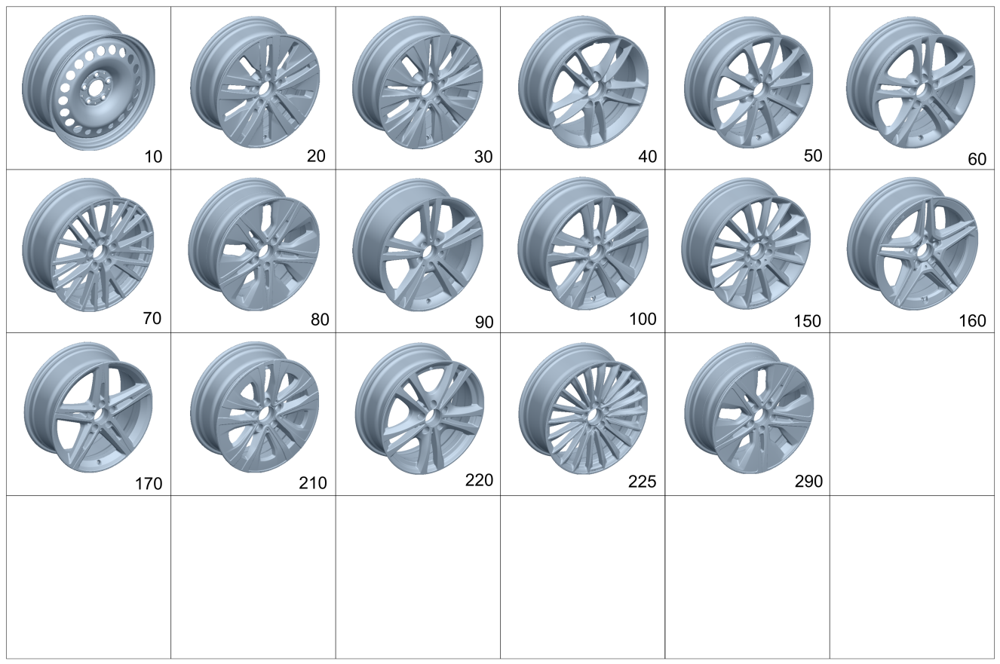

| № | Артикул | Название | Кол. | Примечание |
|---|---|---|---|---|
| 10 | A 247 400 03 00 | Дисковое колесо | 2 | Стальной колесный диск переднего моста; 6,5J X 17 H2 ET 44 |
| 10 | A 247 400 01 00 | Дисковое колесо | 2 | Стальной колесный диск переднего моста; 6,5J X 16 H2 ET 44 |
| 10 | A 247 400 03 00 | Дисковое колесо | 2 | Стальной колесный диск заднего моста; 6,5J X 17 H2 ET 44 |
| 10 | A 247 400 01 00 | Дисковое колесо | 2 | Стальной колесный диск заднего моста; 6,5J X 16 H2 ET 44 |
| 20 | A 177 401 02 00 | Дисковое колесо | 2 | 10\-спицевое колесо переднего моста; 6,5J X 17 H2 ET 44 |
| 20 | A 177 401 02 00 | Дисковое колесо | 2 | 10\-спицевое колесо заднего моста; 6,5J X 17 H2 ET 44 |
| 30 | A 177 401 10 00 | Дисковое колесо | 2 | Колесо с 5 сдвоенными спицами, передний мост; 6,5J X 17 H2 ET 44 |
| 30 | A 177 401 10 00 | Дисковое колесо | 2 | Колесо с 5 сдвоенными спицами, передний мост; 6,5J X 17 H2 ET 44 |
| 30 | A 177 401 10 00 | Дисковое колесо | 2 | Колесо с 5 сдвоенными спицами, передний мост; 6,5J X 17 H2 ET 44 |
| 30 | A 177 401 00 00 | Дисковое колесо | 2 | Колесо с 5 сдвоенными спицами, передний мост; 6,5J X 16 H2 ET 44 |
| 30 | A 177 401 00 00 | Дисковое колесо | 2 | Колесо с 5 сдвоенными спицами, передний мост; 6,5J X 16 H2 ET 44 |
| 30 | A 177 401 00 00 | Дисковое колесо | 2 | Колесо с 5 сдвоенными спицами, передний мост; 6,5J X 16 H2 ET 44 |
| 30 | A 177 401 10 00 | Дисковое колесо | 2 | Колесо с 5 сдвоенными спицами, задний мост; 6,5J X 17 H2 ET 44 |
| 30 | A 177 401 10 00 | Дисковое колесо | 2 | Колесо с 5 сдвоенными спицами, задний мост; 6,5J X 17 H2 ET 44 |
| 30 | A 177 401 10 00 | Дисковое колесо | 2 | Колесо с 5 сдвоенными спицами, задний мост; 6,5J X 17 H2 ET 44 |
| 30 | A 177 401 00 00 | Дисковое колесо | 2 | Колесо с 5 сдвоенными спицами, задний мост; 6,5J X 16 H2 ET 44 |
| 30 | A 177 401 00 00 | Дисковое колесо | 2 | Колесо с 5 сдвоенными спицами, задний мост; 6,5J X 16 H2 ET 44 |
| 30 | A 177 401 00 00 | Дисковое колесо | 2 | Колесо с 5 сдвоенными спицами, задний мост; 6,5J X 16 H2 ET 44 |
| 30 | A 177 401 00 00 | Дисковое колесо | 4 | 10\-спицевый колесный диск, передний и задний мост; 6,5J X 16 H2 ET 44 |
| 30 | A 177 401 00 00 | Дисковое колесо | 4 | 10\-спицевый колесный диск, передний и задний мост; 6,5J X 16 H2 ET 44 |
| 30 | A 177 401 00 00 | Дисковое колесо | 4 | 10\-спицевый колесный диск, передний и задний мост; 6,5J X 16 H2 ET 44 |
| 40 | A 177 401 01 00 | Дисковое колесо | 2 | Колесо с 5 сдвоенными спицами, передний мост; 6,5J X 16 H2 ET 44 |
| 40 | A 177 401 01 00 | Дисковое колесо | 2 | Колесо с 5 сдвоенными спицами, задний мост; 6,5J X 16 H2 ET 44 |
| 40 | A 177 401 01 00 | Дисковое колесо | 4 | 5\-спицевый колесный диск, передний и задний мост; 6,5J X 16 H2 ET 44 |
| 50 | A 177 401 03 00 | Дисковое колесо | 2 | 10\-спицевое колесо переднего моста; 6,5J X 17 H2 ET 44 |
| 50 | A 177 401 03 00 | Дисковое колесо | 2 | 10\-спицевое колесо заднего моста; 6,5J X 17 H2 ET 44 |
| 50 | A 177 401 03 00 | Дисковое колесо | 4 | 10\-спицевый колесный диск, передний и задний мост; 6,5J X 17 H2 ET 44 |
| 60 | A 177 401 04 00 | Дисковое колесо | 2 | Колесо с 5 сдвоенными спицами, передний мост; 6,5J X 17 H2 ET 44 |
| 60 | A 177 401 04 00 | Дисковое колесо | 2 | Колесо с 5 сдвоенными спицами, передний мост; 6,5J X 17 H2 ET 44 |
| 60 | A 177 401 04 00 | Дисковое колесо | 2 | Колесо с 5 сдвоенными спицами, задний мост; 6,5J X 17 H2 ET 44 |
| 60 | A 177 401 04 00 | Дисковое колесо | 2 | Колесо с 5 сдвоенными спицами, задний мост; 6,5J X 17 H2 ET 44 |
| 70 | A 177 401 06 00 | Дисковое колесо | 4 | Колесный диск с 10 сдвоенными спицами, передний и задний мост; 7,5J X 18 H2 ET 49 |
| 70 | A 177 401 06 00 | Дисковое колесо | 2 | КОЛЕСН.ДИСК С 10 ДВОЙН.СПИЦАМИ, ПЕРЕДНИЙ МОСТ; 7,5J X 18 H2 ET 49 |
| 70 | A 177 401 06 00 | Дисковое колесо | 2 | КОЛЕСН.ДИСК С 10 ДВОЙН.СПИЦАМИ, ЗАДНИЙ МОСТ; 7,5J X 18 H2 ET 49 |
| 80 | A 177 401 05 00 | Дисковое колесо | 2 | 5\-спицевое колесо, передний мост; 7,5J X 18 H2 ET 49 |
| 80 | A 177 401 05 00 | Дисковое колесо | 2 | 5\-спицевое колесо заднего моста; 7,5J X 18 H2 ET 49 |
| 90 | A 177 401 08 00 | Дисковое колесо | 2 | Колесо с 5 сдвоенными спицами, передний мост; 7,5J X 19 H2 ET 49 |
| 90 | A 177 401 08 00 | Дисковое колесо | 2 | Колесо с 5 сдвоенными спицами, передний мост; 7,5J X 19 H2 ET 49 |
| 90 | A 177 401 08 00 | Дисковое колесо | 2 | Колесо с 5 сдвоенными спицами, передний мост; 7,5J X 19 H2 ET 49 |
| 90 | A 177 401 08 00 | Дисковое колесо | 2 | Колесо с 5 сдвоенными спицами, задний мост; 7,5J X 19 H2 ET 49 |
| 90 | A 177 401 08 00 | Дисковое колесо | 2 | Колесо с 5 сдвоенными спицами, задний мост; 7,5J X 19 H2 ET 49 |
| 90 | A 177 401 08 00 | Дисковое колесо | 2 | Колесо с 5 сдвоенными спицами, задний мост; 7,5J X 19 H2 ET 49 |
| 100 | A 177 401 27 00 | Дисковое колесо | 2 | Колесо с 5 сдвоенными спицами, передний мост; 7,5J X 18 H2 ET 49 |
| 100 | A 177 401 27 00 | Дисковое колесо | 2 | Колесо с 5 сдвоенными спицами, передний мост; 7,5J X 18 H2 ET 49 |
| 100 | A 177 401 27 00 | Дисковое колесо | 2 | Колесо с 5 сдвоенными спицами, задний мост; 7,5J X 18 H2 ET 49 |
| 100 | A 177 401 27 00 | Дисковое колесо | 2 | Колесо с 5 сдвоенными спицами, задний мост; 7,5J X 18 H2 ET 49 |
| 150 | A 177 401 16 00 | Колесо со спицами | 2 | 14\-спицевый колесный диск, передний мост; 7,5J X 19 H2 ET 49 |
| 150 | A 177 401 16 00 | Колесо со спицами | 2 | 14\-спицевый колесный диск, передний мост; 7,5J X 19 H2 ET 49 |
| 150 | A 177 401 16 00 | Колесо со спицами | 2 | 14\-спицевый колесный диск, задний мост; 7,5J X 19 H2 ET 49 |
| 150 | A 177 401 16 00 | Колесо со спицами | 2 | 14\-спицевый колесный диск, задний мост; 7,5J X 19 H2 ET 49 |
| 150 | A 177 401 16 00 | Колесо со спицами | 4 | 14\-спицевый колесный диск, передний и задний мост; 7,5J X 19 H2 ET 49 |
| 160 | A 177 401 15 00 | Колесо со спицами | 2 | Колесо с 5 сдвоенными спицами, передний мост; 7,5J X 18 H2 ET 49 |
| 160 | A 177 401 15 00 | Колесо со спицами | 2 | Колесо с 5 сдвоенными спицами, задний мост; 7,5J X 18 H2 ET 49 |
| 160 | A 177 401 15 00 | Колесо со спицами | 4 | Колесный диск с 5 сдвоенными спицами, передний и задний мост; 7,5J X 18 H2 ET 49 |
| 170 | A 177 401 07 00 | Дисковое колесо | 2 | Колесо с 5 сдвоенными спицами, передний мост; 7,5J X 18 H2 ET 49 |
| 170 | A 177 401 07 00 | Дисковое колесо | 2 | Колесо с 5 сдвоенными спицами, задний мост; 7,5J X 18 H2 ET 49 |
| 210 | A 177 401 29 00 | Дисковое колесо | 2 | Колесо с 5 сдвоенными спицами, передний мост; 6,5JX17H2 ET 44 |
| 210 | A 177 401 29 00 | Дисковое колесо | 2 | Колесо с 5 сдвоенными спицами, задний мост; 6,5JX17H2 ET 44 |
| 220 | A 177 401 28 00 | Дисковое колесо | 2 | Колесо с 5 сдвоенными спицами, передний мост; 6,5JX17H2 ET44 |
| 220 | A 177 401 28 00 | Дисковое колесо | 2 | Колесо с 5 сдвоенными спицами, задний мост; 6,5JX17H2 ET44 |
| 220 | A 177 401 28 00 | Дисковое колесо | 4 | Колесный диск с 5 сдвоенными спицами, передний и задний мост; 6,5JX17H2 ET44 |
| 220 | A 177 401 04 00 | Дисковое колесо | 4 | Колесный диск с 5 сдвоенными спицами, передний и задний мост; 6,5J X 17 H2 ET 44 |
| 225 | A 177 401 42 00 | Колесо со спицами | 2 | Многоспицевый колесный диск, передний мост; 7,5J X 19 H2 ET 49 |
| 225 | A 177 401 42 00 | Колесо со спицами | 2 | Многоспицевый колесный диск, задний мост; 7,5J X 19 H2 ET 49 |
| 290 | A 177 401 05 00 | Дисковое колесо | 4 | 5\-спицевый колесный диск, передний и задний мост; 7,5J X 18 H2 ET 49 |
| 420 | A 177 400 00 00 | Колесо (WHEEL) | 1 | Аварийное запасное колесо; RAD 3,5BX19H2 |
| 420 | A 177 400 04 00 | Колесо | 1 | Аварийное запасное колесо; 5B X 19 H2 \+ T125/70 R19 100M |
| 430 | A 000 400 29 13 | - Вентиль шины (TIRE VALVE) | 1 | Аварийное запасное колесо |
| 430 | A 000 400 29 13 | - Вентиль шины (TIRE VALVE) | 1 | Аварийное запасное колесо |
| 430 | A 000 401 87 41 | - Вентиль шины (TIRE VALVE) | 1 | Аварийное запасное колесо |
| 440 | A 177 400 01 00 | Дисковое колесо (DISK WHEEL) | 1 | 3,5B X 19H2 ET 0 |
| 440 | A 177 400 01 00 | Дисковое колесо (DISK WHEEL) | 1 | 3,5B X 19H2 ET 0 |
| 440 | A 177 400 03 00 | Дисковое колесо | 1 | 3.5B X19 H2 ET 0 |
| 450 | A 000 401 21 24 | Шина (TIRE) | 1 | |
| 450 | A 000 401 21 24 | Шина (TIRE) | 1 | |
| 510 | A 247 400 06 00 | Колпак колеса (HUB CAP) | 2 | Слева |
| 510 | A 247 400 06 00 | Колпак колеса (HUB CAP) | 2 | Справа |
| 510 | A 247 400 07 00 | Колпак колеса (HUB CAP) | 4 | Передний и задний мост |
| 510 | A 247 400 06 00 | Колпак колеса (HUB CAP) | 4 | Передний и задний мост |
| 510 | A 247 400 07 00 | Колпак колеса (HUB CAP) | 2 | Слева |
| 510 | A 247 400 07 00 | Колпак колеса (HUB CAP) | 2 | Справа |
| 520 | A 222 400 22 00 | Колпак ступицы (CENTER CAP) | 2 | Слева |
| 520 | A 222 400 22 00 | Колпак ступицы (CENTER CAP) | 2 | Слева |
| 520 | A 222 400 22 00 | Колпак ступицы (CENTER CAP) | 2 | Справа |
| 520 | A 222 400 22 00 | Колпак ступицы (CENTER CAP) | 2 | Справа |
| 520 | A 222 400 30 00 | Колпак колеса | 1 | Комплект деталей для переднего и заднего моста |
| 520 | A 222 400 30 00 | Колпак колеса | 1 | Комплект деталей для переднего и заднего моста |
| 520 | A 222 400 22 00 | Колпак ступицы (CENTER CAP) | 4 | Передний и задний мост |
| 520 | A 222 400 22 00 | Колпак ступицы (CENTER CAP) | 4 | Передний и задний мост |
| 525 | A 000 400 09 00 | Колпак колеса | 4 | Передний и задний мост |
| 530 | A 000 990 83 07 | Винт со сфер. буртиком (SPHERICAL COLLAR SCREW) | 20 | Передний и задний мост; M14X1,5X30,7 |
| 530 | A 000 990 17 07 | Винт со сфер. буртиком (SPHERICAL COLLAR SCREW) | 20 | Передний и задний мост; M14X1,5X30,7 |
| 550 | A 000 905 41 04 | Датчик давл. воздуха шины (TIRE PRESSURE SENSOR) | 2 | Система контроля давления в шинах, передний мост |
| 550 | A 000 905 88 21 | Датчик давл. воздуха шины (TIRE PRESSURE SENSOR) | 2 | Система контроля давления в шинах, передний мост; 433MHZ |
| 550 | A 000 905 88 21 | Датчик давл. воздуха шины (TIRE PRESSURE SENSOR) | 2 | Система контроля давления в шинах, передний мост; 433MHZ |
| 550 | A 000 905 42 04 | Датчик давл. воздуха шины (TIRE PRESSURE SENSOR) | 2 | Система контроля давления в шинах, передний мост |
| 550 | A 000 905 89 21 | Датчик давл. воздуха шины (TIRE PRESSURE SENSOR) | 2 | Система контроля давления в шинах, передний мост; 315MHZ |
| 550 | A 000 905 89 21 | Датчик давл. воздуха шины (TIRE PRESSURE SENSOR) | 2 | Система контроля давления в шинах, передний мост; 315MHZ |
| 550 | A 000 905 72 05 | Датчик давл. воздуха шины (TIRE PRESSURE SENSOR) | 2 | Система контроля давления в шинах, передний мост |
| 550 | A 000 905 41 04 | Датчик давл. воздуха шины (TIRE PRESSURE SENSOR) | 2 | Система контроля давления в шинах, задний мост |
| 550 | A 000 905 88 21 | Датчик давл. воздуха шины (TIRE PRESSURE SENSOR) | 2 | Система контроля давления в шинах, задний мост; 433MHZ |
| 550 | A 000 905 88 21 | Датчик давл. воздуха шины (TIRE PRESSURE SENSOR) | 2 | Система контроля давления в шинах, задний мост; 433MHZ |
| 550 | A 000 905 42 04 | Датчик давл. воздуха шины (TIRE PRESSURE SENSOR) | 2 | Система контроля давления в шинах, задний мост |
| 550 | A 000 905 89 21 | Датчик давл. воздуха шины (TIRE PRESSURE SENSOR) | 2 | Система контроля давления в шинах, задний мост; 315MHZ |
| 550 | A 000 905 89 21 | Датчик давл. воздуха шины (TIRE PRESSURE SENSOR) | 2 | Система контроля давления в шинах, задний мост; 315MHZ |
| 550 | A 000 905 72 05 | Датчик давл. воздуха шины (TIRE PRESSURE SENSOR) | 2 | Система контроля давления в шинах, задний мост |
| 550 | A 000 905 41 04 | Датчик давл. воздуха шины (TIRE PRESSURE SENSOR) | 4 | Система контроля давления в шинах переднего моста и заднего моста |
| 550 | A 000 905 41 04 | Датчик давл. воздуха шины (TIRE PRESSURE SENSOR) | 4 | Система контроля давления в шинах переднего моста и заднего моста |
| 550 | A 000 905 41 04 | Датчик давл. воздуха шины (TIRE PRESSURE SENSOR) | 4 | Система контроля давления в шинах переднего моста и заднего моста |
| 550 | A 000 905 41 04 | Датчик давл. воздуха шины (TIRE PRESSURE SENSOR) | 4 | Система контроля давления в шинах переднего моста и заднего моста |
| 550 | A 000 905 88 21 | Датчик давл. воздуха шины (TIRE PRESSURE SENSOR) | 4 | Система контроля давления в шинах переднего моста и заднего моста; 433MHZ |
| 550 | A 000 905 88 21 | Датчик давл. воздуха шины (TIRE PRESSURE SENSOR) | 4 | Система контроля давления в шинах переднего моста и заднего моста; 433MHZ |
| 560 | A 000 400 40 00 | - Вентиль шины (TIRE VALVE) | 2 | Передний мост |
| 560 | A 000 400 41 00 | - Вентиль шины (TIRE VALVE) | 2 | Передний мост |
| 560 | A 000 400 40 00 | - Вентиль шины (TIRE VALVE) | 2 | Задний мост |
| 560 | A 000 400 41 00 | - Вентиль шины (TIRE VALVE) | 2 | Задний мост |
| 565 | A 000 992 50 00 | - Зажимное кольцо (CLAMPING RING) | 1 | Передний мост |
| 565 | A 000 992 50 00 | - Зажимное кольцо (CLAMPING RING) | 1 | Задний мост |
| 570 | A 000 401 85 19 | - Колпачок вентиля (VALVE CAP) | 1 | Передний мост |
| 570 | A 000 401 86 19 | - Колпачок вентиля (VALVE CAP) | 1 | Передний мост |
| 570 | A 000 401 85 19 | - Колпачок вентиля (VALVE CAP) | 1 | Задний мост |
| 570 | A 000 401 86 19 | - Колпачок вентиля (VALVE CAP) | 1 | Задний мост |
| 580 | A 000 401 79 09 | Гайка вентиля (VALVE NUT) | 2 | Датчик давления переднего моста |
| 580 | A 000 401 64 38 | Гайка вентиля (VALVE NUT) | 2 | Датчик давления переднего моста |
| 580 | A 000 401 64 38 | Гайка вентиля (VALVE NUT) | 2 | Датчик давления переднего моста |
| 580 | A 000 401 79 09 | Гайка вентиля (VALVE NUT) | 2 | Датчик давления заднего моста |
| 580 | A 000 401 64 38 | Гайка вентиля (VALVE NUT) | 2 | Датчик давления заднего моста |
| 580 | A 000 401 64 38 | Гайка вентиля (VALVE NUT) | 2 | Датчик давления заднего моста |
| 580 | A 000 401 79 09 | Гайка вентиля (VALVE NUT) | 4 | Датчик давления переднего моста и заднего моста |
| 580 | A 000 401 79 09 | Гайка вентиля (VALVE NUT) | 4 | Датчик давления переднего моста и заднего моста |
| 580 | A 000 401 79 09 | Гайка вентиля (VALVE NUT) | 4 | Датчик давления переднего моста и заднего моста |
| 580 | A 000 401 79 09 | Гайка вентиля (VALVE NUT) | 4 | Датчик давления переднего моста и заднего моста |
| 580 | A 000 401 64 38 | Гайка вентиля (VALVE NUT) | 4 | Датчик давления переднего моста и заднего моста |
| 580 | A 000 401 64 38 | Гайка вентиля (VALVE NUT) | 4 | Датчик давления переднего моста и заднего моста |
| 590 | A 000 400 02 13 | Вентиль шины (TIRE VALVE) | 2 | Передний мост |
| 590 | A 000 400 02 13 | Вентиль шины (TIRE VALVE) | 2 | Передний мост |
| 590 | A 000 401 85 41 | Вентиль шины | 2 | Передний мост |
| 590 | A 000 400 03 13 | Вентиль шины (TIRE VALVE) | 2 | Передний мост |
| 590 | A 000 400 02 13 | Вентиль шины (TIRE VALVE) | 2 | Задний мост |
| 590 | A 000 400 02 13 | Вентиль шины (TIRE VALVE) | 2 | Задний мост |
| 590 | A 000 401 85 41 | Вентиль шины | 2 | Задний мост |
| 590 | A 000 400 03 13 | Вентиль шины (TIRE VALVE) | 2 | Задний мост |
| 600 | A 171 401 01 94 | Балансировочный грузик (BALANCING WEIGHT) | NB | Исполнение с клеевым соединением; 5 GRAMM |
| 600 | A 171 401 02 94 | Балансировочный грузик (BALANCING WEIGHT) | NB | Исполнение с клеевым соединением; 10 GRAMM |
| 600 | A 171 401 03 94 | Балансировочный грузик (BALANCING WEIGHT) | NB | Исполнение с клеевым соединением; 15 GRAMM |
| 600 | A 171 401 04 94 | Балансировочный грузик (BALANCING WEIGHT) | NB | Исполнение с клеевым соединением; 20 GRAMM |
| 600 | A 171 401 05 94 | Балансировочный грузик (BALANCING WEIGHT) | NB | Исполнение с клеевым соединением; 25 GRAMM |
| 600 | A 171 401 06 94 | Балансировочный грузик (BALANCING WEIGHT) | NB | Исполнение с клеевым соединением; 30 GRAMM |
| 600 | A 171 401 07 94 | Балансировочный грузик (BALANCING WEIGHT) | NB | Исполнение с клеевым соединением; 35 GRAMM |
| 600 | A 171 401 08 94 | Балансировочный грузик (BALANCING WEIGHT) | NB | Исполнение с клеевым соединением; 40 GRAMM |
| 600 | A 171 401 09 94 | Балансировочный грузик (BALANCING WEIGHT) | NB | Исполнение с клеевым соединением; 45 GRAMM |
| 600 | A 171 401 10 94 | Балансировочный грузик | NB | Исполнение с клеевым соединением; 50 GRAMM |
| 600 | A 171 401 11 94 | Балансировочный грузик (BALANCING WEIGHT) | NB | Исполнение с клеевым соединением; 55 GRAMM |
| 600 | A 171 401 12 94 | Балансировочный грузик (BALANCING WEIGHT) | NB | Исполнение с клеевым соединением; 60 GRAMM |
| 610 | A 126 401 08 28 | Удерживающая пружина (RETAINING SPRING) | NB | |
| 620 | A 171 401 27 94 | Балансировочный грузик (BALANCING WEIGHT) | NB | Стальной колесный диск; 5 GRAMM |
| 620 | A 171 401 28 94 | Балансировочный грузик (BALANCING WEIGHT) | NB | Стальной колесный диск; 10 GRAMM |
| 620 | A 171 401 29 94 | Балансировочный грузик (BALANCING WEIGHT) | NB | Стальной колесный диск; 15 GRAMM |
| 620 | A 171 401 14 94 | Балансировочный грузик (BALANCING WEIGHT) | NB | Стальной колесный диск; 20 GRAMM |
| 620 | A 171 401 15 94 | Балансировочный грузик (BALANCING WEIGHT) | NB | Стальной колесный диск; 25 GRAMM |
| 620 | A 171 401 16 94 | Балансировочный грузик (BALANCING WEIGHT) | NB | Стальной колесный диск; 30 GRAMM |
| 620 | A 171 401 17 94 | Балансировочный грузик (BALANCING WEIGHT) | NB | Стальной колесный диск; 35 GRAMM |
| 620 | A 171 401 18 94 | Балансировочный грузик (BALANCING WEIGHT) | NB | Стальной колесный диск; 40 GRAMM |
| 620 | A 171 401 19 94 | Балансировочный грузик (BALANCING WEIGHT) | NB | Стальной колесный диск; 45 GRAMM |
| 620 | A 171 401 20 94 | Балансировочный грузик (BALANCING WEIGHT) | NB | Стальной колесный диск; 50 GRAMM |
| 620 | A 171 401 21 94 | Балансировочный грузик (BALANCING WEIGHT) | NB | Стальной колесный диск; 55 GRAMM |
| 620 | A 171 401 22 94 | Балансировочный грузик (BALANCING WEIGHT) | NB | Стальной колесный диск; 60 GRAMM |
Позиций: 167 · подписано на схемах: 167 · колесо — плавный зум в курсор, перетаскивание — пан, двойной клик — зум, клик по артикулу — скопировать.